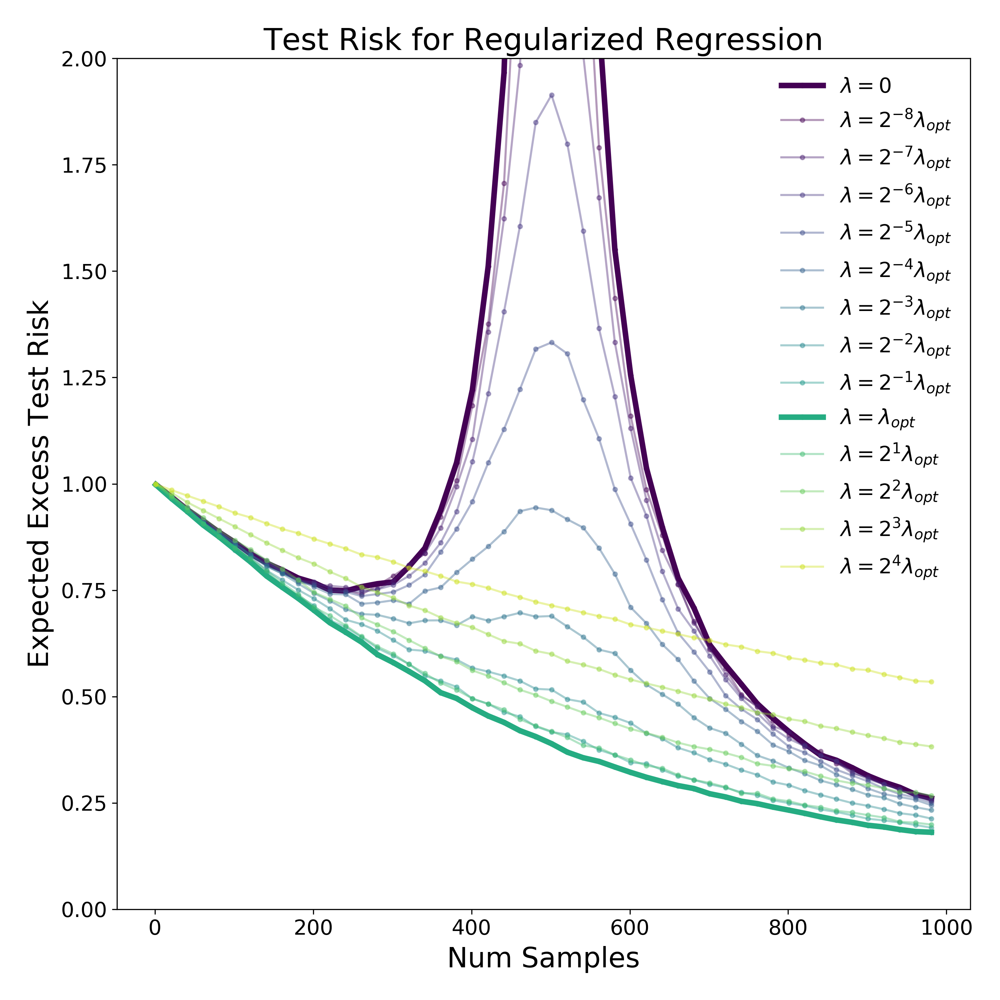
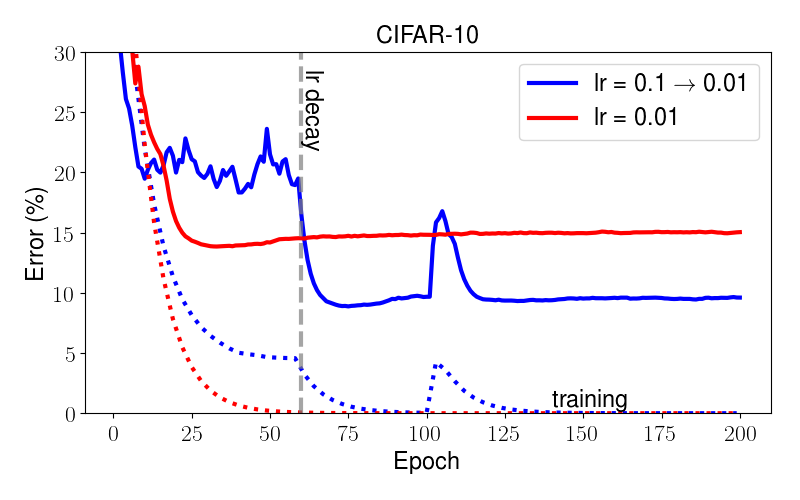

Lecture 6: Bias, Variance, and Picking Models
Video blocked (ad-blocker or local file mode).
Watch on YouTubeVideo not loading? Watch on YouTube
Original lecture. Chris Ré covers bias and variance, double descent, data splits, and Hyperband.
How to read this lesson
This lesson has two levels. Level 1 (Core) contains what you need to understand everything that follows in CS229 and the courses that build on it. Level 2 (Deep) contains what you need for correct, interview-grade understanding. Read Level 1 straight through. Return to Level 2 when you want depth.
No prerequisites are assumed. Every term is defined at first use. Loss functions and MLE were defined in lectures 2 and 3; they are reused, not re-explained.
Level 1: Bias and variance
Every model error decomposes into two parts 00:07 ⏱00:07. Bias is error from wrong assumptions: the model class cannot capture the truth, no matter how much data arrives. A line fit to a curve has high bias. Variance is error from sensitivity to the training sample: a different dataset would give a very different model. A 1000-degree polynomial through 10 points has high variance.

Think of four archers. Low bias, low variance: tight group on the bullseye. Low bias, high variance: scattered around the bullseye, right on average. High bias, low variance: tight group off target. High bias, high variance: scattered and off. Simple models err toward bias. Complex models err toward variance. Regularization 00:18 ⏱00:18 is the dial: penalize complexity to trade variance for bias.
The classical advice: test error follows a U curve in model complexity. Too simple, bias dominates. Too complex, variance dominates. Pick the bottom of the U. This canon ruled for decades. Then the next section broke it.
Total error splits into bias (wrong assumptions, too simple) plus variance (oversensitive to the sample, too complex) plus irreducible noise. Making the model more flexible reduces bias but raises variance. Regularization tunes the tradeoff. The classic picture is a U-shaped test-error curve with the best model at the bottom. Usually not by tuning complexity alone. But more data reduces variance without raising bias, and better features can reduce bias without raising variance. The tradeoff binds a fixed dataset and feature set. Change those and the whole curve shifts down.
Level 1: Double descent
Modern practice broke the U curve. Keep adding parameters past the point where the model perfectly fits the training data, the interpolation point, and test error falls again. This is double descent 01:18 ⏱01:18, named in papers by Misha Belkin and coauthors 63:54 ⏱63:54.

Why: past interpolation, many parameter settings fit the training data exactly. Gradient descent does not pick among them at random. It drifts toward the minimum-norm solution 49:25 ⏱49:25: the simplest fit, in a precise sense. Ridge regression makes this explicit by penalizing large weights. Bigger models plus the minimum-norm bias generalize better than medium models stuck at the interpolation peak.
Related: flat versus sharp minima. A flat minimum keeps the loss low under small parameter wiggles; a sharp one spikes. Flat minima tend to generalize better, because test data moves the surface slightly and flat regions survive the move. The lecture treats this as useful intuition with active debate behind it, not as settled law.
Test error falls, then rises to a peak at the interpolation threshold where the model just barely fits the training data, then falls again as parameters keep growing. Classical theory predicted only the first U. The second descent comes from the optimizer’s bias toward minimum-norm solutions among the many perfect fits. It explains why enormous models can generalize. No. The second descent is a tendency, not a guarantee, and it costs compute. Past some size the gains flatten while the bills do not. The practical reading: do not fear overparameterization the way classical theory taught, but still measure test error instead of assuming.
Level 1: Train, dev, test
Three splits, three jobs 02:59 ⏱02:59. Train: fit parameters. Dev (validation): pick hyperparameters and models. Test: report the final score, once. The test set is locked away. Touch it during development and it becomes a dev set: your decisions leak into it and the score lies.
K-fold cross-validation 02:04 ⏱02:04 is the small-data discipline. Split the data into K chunks. Train on K-1, validate on the rest, rotate, average. Every point serves as validation exactly once. It costs K training runs and buys a stable estimate when data is scarce.
The cautionary tale is adaptive overfitting: ImageNet to ImageNet-V2 01:41 ⏱01:41. Years of models tuned against the same test set adapted to its quirks. A fresh test set from the same distribution scored everyone lower. The test set had become a dev set through collective reuse. Benchmarks rot when the whole field shares one test set.
Two splits conflate model selection with evaluation. Every time you pick a hyperparameter using the test set, you fit the test set a little. After enough picks, the test score measures your tuning skill, not the model. The dev set absorbs the tuning. The test set stays clean for one honest measurement at the end. Time leakage. Splitting randomly when the data has time structure, so the model trains on the future and is tested on the past. Shuffling is for iid data. For temporal data, split by time: train on the past, test on the future, always.
Level 1: Hyperband
Hyperparameters are the settings outside the model: learning rate, batch size, regularization strength, architecture choices. Tuning them by hand is slow. Grid search is wasteful: most configurations are obviously bad after a little training.
Hyperband 02:14 ⏱02:14 is successive halving with multiple brackets. Try many configurations on a small budget. Keep the top half. Double their budget. Repeat. Bad configurations die cheap. Good ones earn more training. The brackets vary the starting tradeoff between many-cheap and few-expensive trials.

The principle generalizes: allocate compute to promising candidates, kill the rest early. It is the same instinct behind early stopping, and it is how serious hyperparameter searches stay affordable.
Never give every configuration the full budget. Hyperband starts many configs cheap, keeps the winners, and doubles their budget each round. Random search over the space usually beats grid search because it explores more distinct values per dimension. And always tune on the dev set, never the test set. Parameters are learned by the optimizer: weights, biases. Hyperparameters are set before training: learning rate, batch size, regularization strength, depth. The model cannot learn its own learning rate from the loss gradient. You pick it, or a tuner like Hyperband picks it for you.
Level 2: Regularization, concretely
The lecture’s workhorse is ridge: add lambda times the squared norm of theta to the loss. The loss chip gains a term: J(theta) + lambda ||theta||^2. Lambda is the dial. Zero recovers ordinary least squares. Infinity forces theta to zero. Between them, the fit trades training error against weight size.
Ridge has a closed form like the normal equations, with X^T X + lambda I in place of X^T X. The added identity fixes the singularity problem from lecture 2: the matrix is always invertible now. Regularization is doing two jobs at once: statistical (less variance) and numerical (no null space).
Why penalize large weights at all? Large weights mean the output swings hard on small input changes: the definition of a high-variance, jagged fit. Small weights mean smooth, stable predictions. The penalty encodes a prior belief that the world is smooth. Beliefs like that are what regularizers are.
Level 2: Reading the double-descent debate honestly
Double descent is real empirically and genuinely surprising, but the lecture keeps two caveats. First, the minimum-norm story is cleanest for squared loss and linear models; for deep networks the “norm” being minimized is subtler and optimizer dependent. Second, flat minima as an explanation is debated: sharp minima can generalize too, and the definitions of flatness that correlate with generalization are delicate. The honest summary: classical bias-variance thinking is incomplete, not wrong. It describes the first descent. The second descent needs the optimizer’s implicit bias in the story.
Recap: the whole lesson on one screen
Eight ideas carry this lecture. Read each card. Say the core sentence out loud. If you can, you own the lesson.
Bias: wrong assumptions, too simple. Variance: oversensitive to the sample, too complex. Regularization is the dial between them.
Key: simple errs to bias, complex to variance
Past the interpolation peak, test error falls again. The optimizer prefers minimum-norm fits among perfect ones. Big models can generalize.
Key: the second descent past interpolation

Flat regions stay low-loss when data moves the surface. Sharp ones spike. Useful intuition, active debate, not settled law.
Key: flat generalizes, usually
Add lambda ||theta||^2 to the loss. Fixes singularity and variance at once. Lambda is the dial. Small weights mean smooth predictions.
Key: J + lambda||theta||^2
Train fits. Dev selects. Test reports once. Touch test during tuning and it becomes dev. K-fold rotates validation when data is scarce.
Key: test is locked until the end
Years of tuning on one test set adapted the field to its quirks. Fresh data scored everyone lower. Shared test sets become dev sets.
Key: adaptive overfitting is collective
Many configs, small budgets, keep the top half, double budgets. Random search beats grid. Tune on dev, never test.
Key: successive halving

Learning rate decay helps image models, but model size and training time move results more than schedule tuning. Tune the big dials first.
Key: size and time beat schedule
Official sources and further reading
Official: - Lecture 6 video: bias and variance 00:07 ⏱00:07, double descent 01:18 ⏱01:18, Hyperband 02:14 ⏱02:14, k-fold 02:04 ⏱02:04, ImageNet-V2 01:41 ⏱01:41, minimum norm 49:25 ⏱49:25. - CS229 Spring 2026 official course notes: model selection chapter; the notes figures above are from it.
Further reading: - Belkin et al. (2019), “Reconciling modern machine-learning practice and the classical bias-variance trade-off”: the double-descent paper. - Recht et al. (2019), “Do ImageNet Classifiers Generalize to ImageNet?”: the ImageNet-V2 study. - Li et al. (2018), “Hyperband: A Novel Bandit-Based Approach to Hyperparameter Optimization.”
Caveats from these sources. The flat-minima story is debated; treat it as intuition. Double descent’s cleanest theory is for linear models; deep nets are messier. The notes’ CIFAR-10 schedule figure is one dataset and one architecture; schedules do not transfer blindly.
Connections to the other courses
- CS336: scaling laws are double descent’s big sibling: test loss as a function of compute, measured at frontier scale.
- CS224N: dev-set discipline governs every embedding and pretraining experiment.
- CS329H: adaptive overfitting is a mechanism-design problem: benchmarks are games, and participants optimize the metric.
Model selection cheatsheet. Bias: too simple, wrong assumptions. Variance: too sensitive to sample. Regularization trades them; ridge adds lambda||theta||^2, also fixes singular X^T X. Double descent: error falls again past interpolation; optimizer seeks minimum norm. Flat minima generalize better, debated. Splits: train fits, dev selects, test reports once. K-fold for small data. ImageNet-V2: shared test sets rot. Hyperband: successive halving, many cheap configs, double winners’ budgets.
The test set is a budget. Every peek spends it. Spend it on dev instead. When the final number comes from a set you tuned on, it is not a measurement. It is a memory.
Sources
- VIDEOLecture 6 video, Stanford Online YouTube
- NOTESOfficial subtitle transcript (en-US)
- NOTESCS229 Spring 2026 official course notes (local PDF)